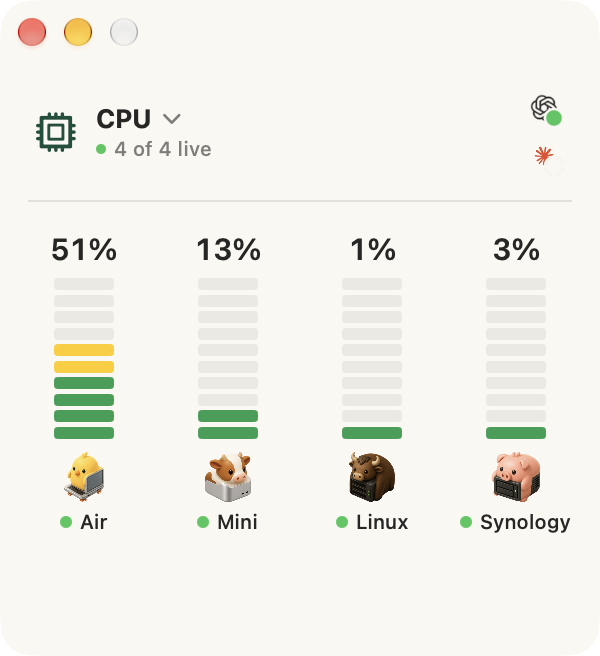
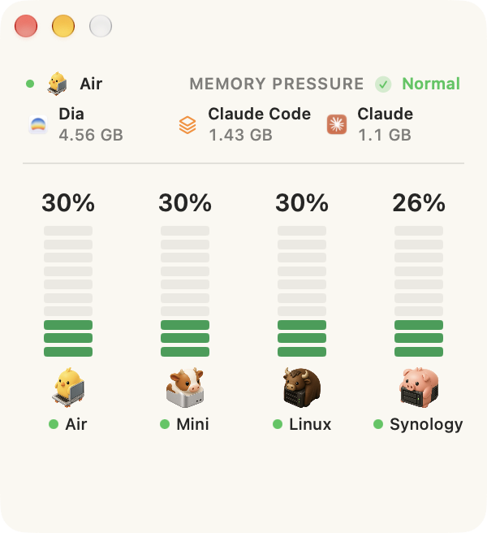

Every other monitor watches one machine.
You have a laptop, a mini under the desk, a Linux box in the closet, and a NAS with the backups on it. Your system monitor shows you exactly one of them.
Little Herd shows them side by side — one bar per machine, its name and its face underneath, a green dot when it’s live and a red one when it isn’t. One glance answers the question you actually have: which machine is busy, and is anything down?

See which agent is working, and where.
Claude Code and Codex sessions across every machine in the herd: the project each one is in, whether it’s running, waiting for you, or finished, and how far through its plan it has got.
Little Herd reads session metadata only — never your prompts, your responses, your command lines, or your keys. Nothing is sent anywhere.
Hover a machine, and the header becomes that machine.
What it’s running, what’s holding its memory, or how full its disks are — in the same space, without the window resizing under you.
Memory is reported as macOS’s own pressure state, so cache doing its job doesn’t read as a problem.

Nothing to install on the other machines.
No agent. No daemon. No password, no root, no companion app. Little Herd runs one short read-only command over the SSH connection you already have, once every ten seconds.
If you can ssh to it, Little Herd can watch it.
Your keys stay in your SSH config — Little Herd stores a hostname and, if you use one, the path to an identity file. A Synology is the one machine that needs an account, and its password goes in the login keychain, never in preferences.
Every machine gets a face.
Twelve of them: laptop, mini, studio, all-in-one, NUC, edge box, NAS, tower, GPU workstation, rack, coordinator, and cloud. Little Herd guesses which one fits while it’s discovering your machines. You get the last word.
 Laptop
Laptop Mini
Mini Studio
Studio All-in-one
All-in-one NUC
NUC Edge box
Edge box NAS
NAS Tower
Tower GPU workstation
GPU workstation Rack
Rack Coordinator
Coordinator Cloud
Cloud
And the rest of it.
Memory pressure, not memory used
macOS’s own normal, warning and critical states — so cache doing its job doesn’t read as a problem.
Possible leaks, marked
An app whose memory has grown steadily across seven readings gets a red dot, with the measured growth behind it.
The volume that runs out first
Each machine’s fullest disk, with free space underneath. APFS volumes sharing a container are counted once.
What’s actually running
Per-machine process lists with approximate core usage, each with its own app icon.
It reconnects by itself
A machine that sleeps keeps its last values and says Unavailable, with a tooltip saying why. No dialog.
Signed, notarized, and updates itself
Developer ID and Apple notarization, with automatic updates.
The source is public.
Read it, build it, change it, ship it inside your own work — anything except selling a competing product. Two years after each release goes out, that release becomes MIT.
FSL-1.1-MIT